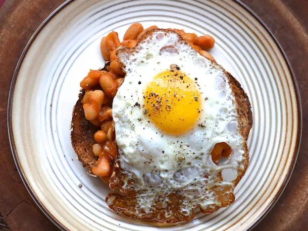

Quick Morning Beans and Fried Eggs Recipe

Canned beans are easily transformed into a quick, simple, and hearty meal.
Most of us have turned to canned beans in moments of need. Whether it's chickpeas on a salad for lunch at the office, or pork and beans as a late-night dinner, canned beans are easily transformed into a quick, simple, and hearty meal. This version is somewhere between BBQ baked beans and the classic can of Heinz beans that's a staple for any full English breakfast.
Ingredients
- 2 tbsp butter
- 1 medium onion
- 2 medium garlic cloves
- 2 cans of beans
- 1/2 cup ketchup
- 2 tbsp light brown sugar
- 2 tsp worcestershire sauce
- 1/2 cup water
- kosher salt
- fresh ground pepper
- 4 slices bread
- 1 tbsp olive oil
- 4 eggs
Steps
- Heat butter in a medium non-stick skillet over medium high heat until melted. Add onions and garlic and cook, stirring, until soft, about 4 minutes. Add beans, ketchup, brown sugar, Worcestershire sauce, and water. Stir to combine. Bring to a simmer and cook until liquid is reduced, about 5 minutes. Season to taste with salt and pepper. Remove from heat and keep warm.
- While beans cook, heat olive oil in a non-stick skillet over high heat until shimmering. Add eggs, season with salt and pepper, and cook until whites are set but yolks are still runny. Divide toast between 4 plates, the top with beans (or place on the side) then top beans with eggs.
Back to Home Page